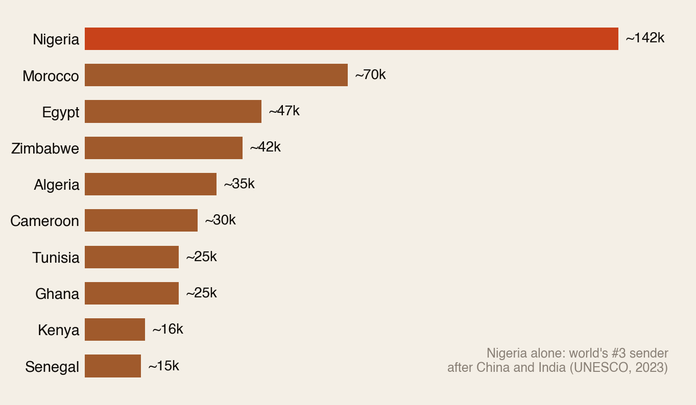
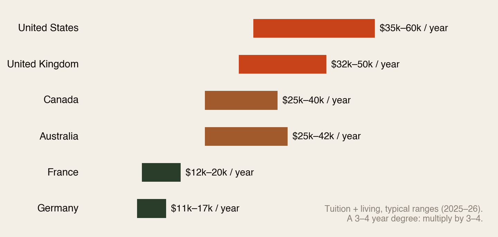
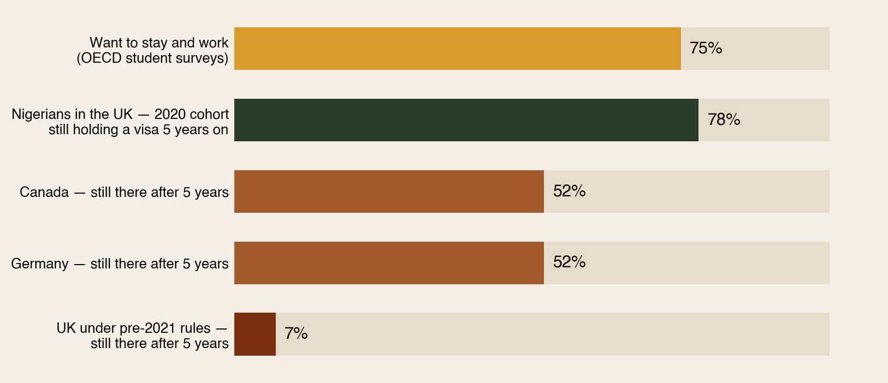
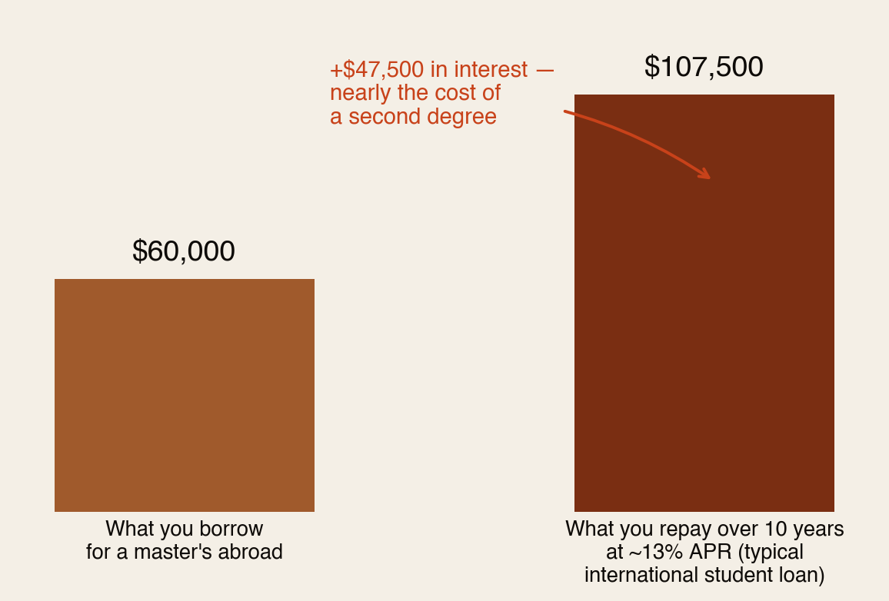

Degrees of debt.
More than half a million Africans are studying abroad. The degree costs up to $60,000 a year, the loans run at ~13% interest for up to 20 years, and families sell land to pay for it. The whole bet rests on one thing: converting the degree into a job. This is what the bet actually costs — and when it pays.
Section 01The Short Version
Studying abroad is the biggest financial bet most African families ever make. Here it is in five numbers:
- 142,000 — Nigerians studying abroad in 2023, up 98% in four years. Nigeria is now the world’s #3 sender of international students, behind only China and India. Africa overall: 500,000+.
- $35k–60k a year — the all-in cost of studying in the US or UK. A full degree: $100,000–$200,000+.
- ~13% APR — where interest rates start on the loans available to African students abroad, with repayment terms up to 20 years.
- 86% — Nigerian UK graduate-visa holders who found work — the highest of any major nationality. The conversion is real.
- 7% vs 52% — five-year stay rates in the pre-2021 UK vs Canada and Germany. Where you study decides whether the bet can even pay off.
The degree is not the investment. The degree plus the job is the investment. Pay for one without a plan for the other, and what you’ve bought is the most expensive certificate in the family’s history.
Section 02Half a Million Students: Who Sends the Most

Two things stand out. First, the scale: Nigeria’s 142,000 makes it the third-largest sender on earth. Second, the intensity: Zimbabwe, with 16 million people, sends almost as many students abroad as Egypt, with 110 million. When a country’s young people price their future, more and more of them are pricing it in someone else’s currency.
Section 03What It Costs

Set those numbers against home incomes and the scale of the sacrifice becomes visible. One year in the UK (~$40,000) is roughly 15 years of an average Nigerian salary. Even a “cheap” German year is several years of income in most sending countries.
The money is real and it leaves: Nigerian families pushed over $4 billion through official channels for foreign education in just eight years — and analysts note Nigerian parents spend more on UK education than the federal government’s entire annual education budget. Where does it come from? Savings, yes — but also sold land, emptied retirement funds, family cooperatives, and loans. The whole family often invests; the whole family expects a return.
Notice, too, the quiet arbitrage in Fig 2: France and Germany cost a third of the US and UK — a fact that gets far less airtime in African living rooms than the Russell Group and the Ivy League do.
Section 04The Bet: Turning the Degree Into a Job
Here’s the honest part nobody tells students at the visa interview: no country publishes a clean number for “came to study, got a job.” The best evidence comes from stay rates and post-study visa data — and it says the odds vary wildly by destination:

The good news for African students is real: 86% of Nigerians on the UK’s Graduate Route found work — the highest of the top five nationalities — and 78% of Nigeria’s 2020 student cohort still held a UK visa five years on. When the door is open, Africans walk through it and work.
But the door is policy, not right. The UK banned most students’ dependants in 2024 and keeps reviewing the Graduate Route; Canada capped study permits; visa rules shift with every election. The same degree, in the same university, can be a launchpad one year and a very expensive dead end three years later.
Section 05The Debt Years
African students mostly can’t access the domestic loan systems local students use — no US federal loans, no UK student finance. What’s available instead is a small set of specialist international lenders, and their terms define the next decade of a graduate’s life:

- The rates: specialist lenders to African students start around 13% APR (variable) — roughly double what domestic students pay — with terms of 7 to 20 years. Nigeria and Ghana are among the top five origin countries for these lenders worldwide.
- The monthly reality: that $60k loan costs ~$900 a month for ten years. Manageable on a London or Toronto salary. Impossible on most Lagos or Accra ones.
- The family version: many students carry no formal loan — instead they carry sold family land, a parent’s emptied pension, and an unwritten repayment schedule that lasts just as long. The debt is real even when no bank holds it.
Do the math in one line: the loan is repayable in the destination currency and unpayable in the home one. That single fact quietly decides where a generation of African graduates lives.
Section 06When the Bet Fails
Three ways the same investment goes wrong — all common, none discussed at send-off parties:
- Graduate, no job, visa clock running. Post-study visas last 18 months to 3 years. Every month without a qualifying job burns runway on a degree already paid for.
- The rules change mid-degree. Students who enrolled when dependants were welcome and graduate routes generous can graduate into a different country than the one they applied to.
- Return home with foreign debt. A $900/month repayment against a $300/month home salary isn’t a burden — it’s an impossibility. The graduate either defaults, drains the family again, or re-emigrates by any means available. The debt makes the migration permanent even when the person wanted to return.
This is the deepest cost of the current system: it converts what could be circular migration — study, work, return with skills and capital — into one-way pressure. The debt, not the dream, decides.
Section 07Making the Bet Smarter
- Price the whole bet, not the tuition. Total cost = (yearly all-in × years) + interest + the visa-risk discount. If the number only works with a destination-country job, say that out loud before anyone sells land.
- Choose the destination by conversion odds, not just ranking. A mid-tier German or Canadian degree with a 52% five-year stay rate can be a far better investment than a famous name somewhere the door is closing.
- Consider the cost arbitrage. France and Germany deliver degrees at a third of Anglo prices — the difference funds years of living expenses or eliminates the loan entirely.
- Scholarship-first, loan-last. Every scholarship dollar is a dollar that never compounds against you at 13%.
- Read the loan like a lawyer. Variable vs fixed, grace period, early-repayment penalties, and — above all — what happens if you have to go home.
- If the family is the bank, write it down. Who paid what, what’s expected back, on what timeline. Unwritten family loans outlast written ones.
Study abroad can still be the best investment an African family ever makes. It just has to be made like an investment — with the job, the visa maths and the exit plan priced in from day one.
Section 08How We Checked
- Verified: Nigeria’s 142,000 students abroad and world-#3 rank (UNESCO, 2023); 86% of Nigerian Graduate Route holders in work and Nigeria’s #2 share of UK graduate visas (UK Home Office analysis); 78% five-year visa retention for the UK’s 2020 Nigerian student cohort (Migration Observatory); OECD five-year stay rates (Canada/Germany ~52%; pre-2021 UK ~7%); loan terms from ~13% APR and 7–20 year tenors (Prodigy Finance, MPOWER); Nigeria’s $4bn+ in official foreign-education outflows over eight years (Guardian Nigeria / CBN data).
- Estimates (indicative): the top-10 sender figures other than Nigeria (UNESCO UIS and national data, 2021–23 vintages vary); the per-destination cost ranges (compiled from university and visa-guidance data, 2025–26); the $60k/13%/10-year loan illustration (our arithmetic on typical published terms).
- Honest gap: no country publishes “came to study and got a job” as a single statistic — stay rates and post-study visa employment are the best available proxies, and we label them as such.
Sources: UNESCO / Businessday; UK Home Office Graduate Route analysis; Migration Observatory (Oxford); OECD International Students in Higher Education; ICEF Monitor; WENR; Prodigy Finance; MPOWER Financing; Guardian Nigeria; Carnegie Endowment. Full detail in the PDF edition.
The diaspora helps the diaspora.
Africa Global Forum is a peer network for Africans abroad — help each other, sit together, and bounce ideas. The research above is part of an open library. The Forum itself is by application.